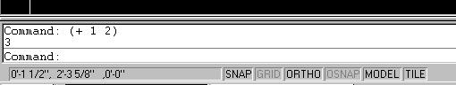
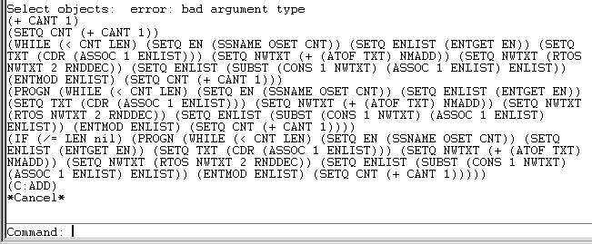
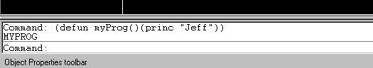
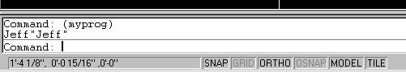
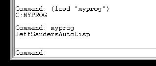

<html>


<!-- Mirrored from www.jefferypsanders.com/autolispbeg.html by HTTrack Website Copier/3.x [XR&CO'2004], Thu, 23 Sep 2004 01:06:33 GMT -->
<head>
<meta name="GENERATOR" content="Microsoft FrontPage 5.0">
<meta name="description" content="The Autolisp Beginners Tutorial.">
<meta name="keywords" content="autolisp, autolisp tutorial, autolisp beginners tutorial, autolisp how to, how to autolisp">
<title>The AutoLisp Beginner's Tutorial</title>
</head>

<body>

</body>

</html>
<p align="center"><font color="#000000"><big><big><big><strong>The AutoLisp 
Beginner</strong></big></big></big></font><font face="Helvetica"></p>
    <hr size="4" color="#0000FF">
    <p align="center"></font><font color="#000000"><strong>Welcome to the world 
    of AutoLisp.&nbsp;&nbsp; Soon you will know what the hell a car of a cdr is.</strong></font><font face="Helvetica"></p>
    </font><hr size="4" color="#0000FF">
    <p align="left"><font color="#000000"><strong><big>Let's get to it.&nbsp; 
    But how?</big></strong></font></p>
    <p align="left"><font color="#000000" face="Helvetica">&nbsp;&nbsp;&nbsp;</font><font color="#000000"> 
    When I say &quot;type this at the command line&quot; I will put the actual key strokes 
    in red except for the enter key.&nbsp; This will mean that you should type 
    the </font><font color="#FF0000">red letters</font><font color="#000000"> in 
    at the Command Prompt inside AutoCAD as if you were typing the command 
    &quot;Line&quot;.&nbsp; To clarify, If I say &quot;type this at the command line: </font><font color="#FF0000">
    Line </font><font color="#000000">and press the enter key, you would type 
    the word &quot;</font><font color="#FF0000">Line</font><font color="#000000">&quot; at 
    the command prompt inside of AutoCAD and press the enter key afterwards.&nbsp; 
    Got it?&nbsp; No? Oh, never mind.&nbsp; Just keep reading.&nbsp; I won't 
    leave you behind.</font></p>
    <hr size="4" color="#0000FF">
    <p align="left"><font color="#000000"><big><strong>The first thing you 
    should know about AutoLisp:</strong></big></font></p>
    <p align="left"><font color="#000000">AutoLisp always has as many opens &quot;(&quot; 
    as it does closes &quot;)&quot;.&nbsp; </font></p>
    <p align="left"><font color="#000000">Every AutoLisp program should look 
    similar to this:</font></p>
    <p align="left"><font color="#FF0000" face="Courier">(defun myProg() <br>
    &nbsp;&nbsp;&nbsp;&nbsp;&nbsp; (princ &quot;Jeff&quot;)<br>
    &nbsp;&nbsp;&nbsp;&nbsp;&nbsp; (princ)<br>
    )</font></p>
    <p align="left"><font color="#000000">You can execute AutoLisp at the 
    Command Prompt inside AutoCAD.&nbsp;&nbsp; This is where we will start.&nbsp;&nbsp; </font></p>
    <p align="left"><font color="#000000">&nbsp;&nbsp;&nbsp; AutoLisp is a 
    language that returns a value after executing.&nbsp; Every function that 
    executes will return or echo it's answer.&nbsp;&nbsp; Let's test this.&nbsp;&nbsp;&nbsp;&nbsp; 
    Open AutoCAD and type this at the command line: </font><font color="#FF0000"><font face="Courier">
    (+ 1 2)</font>
    </font><font color="#000000">and press the enter key. (The </font><font color="#FF0000">
    +</font><font color="#000000"> function adds numbers together).&nbsp; Look 
    at the command line. You should see something that looks like this:</font></p>
    <p align="left">
    </p>
    <p align="left">&nbsp;&nbsp;&nbsp; Notice the <font color="#FF0000">3</font><font color="#000000"> 
    below the line you typed and the Command Prompt?&nbsp; AutoLisp returned the 
    value of the function you typed in.&nbsp; Try it again. This time change the </font><font color="#FF0000">
    1</font><font color="#000000"> to </font><font color="#FF0000">3 </font><font color="#000000">
    and the </font><font color="#FF0000">2</font><font color="#000000"> to </font><font color="#FF0000">
    5</font><font color="#000000">.&nbsp; As in </font><font color="#FF0000" face="Courier">
    (+ 3 5)</font><font color="#000000">.&nbsp; What did it return?&nbsp; 
    AutoLisp ALWAYS returns the answer.</font></p>
    <hr size="4" color="#0000FF">
    <p align="left"><big><strong><font color="#000000">Variables</font></strong></big></p>
    <p align="left"><font color="#000000">&nbsp;&nbsp;&nbsp;&nbsp; What the hell 
    is a variable?&nbsp; Variables are names or placeholders if you will, for 
    values.&nbsp;&nbsp; Remember algebra?&nbsp; (Your going to wish you would 
    have paid attention to Mrs. Johnson instead of that cheerleader on the first 
    row with the blond hair and the big...well ...nevermind.) X=1 Y=2.&nbsp; 
    Look familiar?&nbsp; X and Y are variables.&nbsp; They could mean anything.&nbsp;&nbsp; 
    If you need to store data, such as a string or integer, you will need to 
    assign a variable name to the data.&nbsp; The way to do this is to use the </font><font color="#FF0000">
    setq</font><font color="#000000"> function.&nbsp; Ex. </font><font color="#FF0000" face="Courier">
    (setq a 1)</font><font color="#000000">.&nbsp; This set's the variable </font><font color="#FF0000">
    a</font><font color="#000000"> to the value </font><font color="#FF0000">1</font><font color="#000000">.&nbsp; 
    Anytime you use the variable </font><font color="#FF0000">a</font><font color="#000000"> 
    in your program, it will actually use the value </font><font color="#FF0000">
    1</font><font color="#000000">.&nbsp; If you typed </font><font color="#FF0000" face="Courier">
    (+ a 2)</font><font color="#000000"> and pressed enter, AutoLisp would 
    return </font><font color="#FF0000">3</font><font color="#000000">. </font></p>
    <p align="left"><font color="#000000">&nbsp;&nbsp;&nbsp; You can use any 
    variable name you want.&nbsp; (Practically)&nbsp; Upper case and lower case 
    does not matter.&nbsp; I would suggest you do not use any names that AutoCAD 
    has in use. How do you know which ones are being used by AutoCAD?&nbsp; Good 
    question Jeff.&nbsp; The simplest method to find out if AutoCAD is using a 
    name is to type in the name at the Command Prompt inside of AutoCAD and 
    press the enter key.&nbsp; If nothing happens,&nbsp; use it.&nbsp; </font></p>
    <p align="left"><font color="#000000">&nbsp;&nbsp;&nbsp; If you were to 
    write a program named Line.lsp and load the program, AutoCAD's built in LINE 
    command will seem to be replaced.&nbsp; When you type </font><font color="#FF0000">
    Line</font><font color="#000000"> you will run your program instead of the 
    Line command.&nbsp; You will get the built in functions back next time you 
    open a new drawing or you could use a period in front of the command to make 
    it execute an AutoCAD built in function.&nbsp; Ex. </font><font color="#FF0000">
    .LINE&nbsp; </font><font color="#000000">would execute the AutoCAD built in 
    function instead of your program.&nbsp; I do not suggest toying with this.&nbsp; </font></p>
    <p align="left"><font color="#000000">&nbsp;&nbsp;&nbsp;&nbsp; Name your 
    variables and programs something unique.&nbsp; AutoCAD does not have any 
    built in functions that are a single character.&nbsp; So </font><font color="#FF0000">
    a</font><font color="#000000"> through </font><font color="#FF0000">z</font><font color="#000000"> 
    are fair game.&nbsp;&nbsp; Some safe examples are:</font></p>
    <p align="left"><font color="#FF0000" face="Courier">(setq a 1) </font></p>
    <p align="left"><font color="#FF0000" face="Courier">(setq b1 3)</font></p>
    <p align="left"><font color="#FF0000" face="Courier">(setq aa1 4) </font></p>
    <p align="left"><font color="#FF0000" face="Courier">(setq 
    jeffsVarForHisProgram 1)</font></p>
    <p align="left"><font color="#FF0000" face="Courier">(setq thisVarA 2)</font></p>
    <p align="left"><font color="#000000">Some bad examples are:</font></p>
    <p align="left"><font color="#FF0000">(setq line 1)</font></p>
    <p align="left"><font color="#FF0000">(setq acad 4)</font></p>
    <p align="left"><font color="#FF0000">(setq ltscale 7)</font></p>
    <p align="left"><font color="#FF0000">(setq car 12)</font></p>
    <p align="left"><font color="#FF0000">(setq cdr 400)&nbsp; </font></p>
    <p align="left"><font color="#000000">Again with the car and cdr stuff?&nbsp; 
    What is it man?</font></p>
    <p align="left"><font color="#000000">&nbsp;&nbsp;&nbsp; I suggest you use 
    variable names that are somewhat descriptive.&nbsp; If you had to name a 
    variable for a string that contains people's names then I would use 
    something like this </font><font color="#FF0000" face="Courier">(setq 
    strName &quot;Jeff&quot;)</font><font color="#000000">.</font></p>
    <p align="left"><font color="#000000">&nbsp;&nbsp;&nbsp; If you have a 
    variable name for a integer that holds the data for a value that represents 
    a title block selection then I would use something like this </font><font color="#FF0000" face="Courier">
    (setq intTBSelection 3)</font><font color="#000000">.</font></p>
    <p align="left"><strong><font color="#000000">&nbsp;&nbsp; A couple of 
    important last minute things:</font></strong></p>
    <p align="left"><font color="#000000">While inside AutoCAD you can check 
    your variables to see what they are set to.&nbsp; This is very handy when 
    debugging a program.&nbsp; Type </font><font color="#FF0000" face="Courier">
    (setq aa1 454)</font><font color="#000000"> and press enter.&nbsp; To check 
    the value of the variable we just declared, simply type </font><font color="#FF0000">
    !aa1</font><font color="#000000"> at the command prompt.&nbsp; Go ahead.&nbsp;&nbsp; 
    Try it.&nbsp; AutoLisp echo's the value to the command line.&nbsp; Using an 
    exclamation point in front of the variable prints the value of the variable 
    to the command line.</font></p>
    <p align="left"><strong><font color="#FF0000">New!</font><font color="#000000">&nbsp; 
    Have you ever seen an AutoLisp program crash?</font></strong><font color="#000000">&nbsp;&nbsp; 
    Ever try to debug it?&nbsp;&nbsp; It looks like a bunch of garbled mess.&nbsp; 
    How in the heck can you cipher through all of this:</font></p>
    <p align="left">
    </p>
    <p align="left">&nbsp;&nbsp; It's not as tough as it looks.&nbsp; You only 
    have to worry about the first or second lines returned.&nbsp; In this case 
    the culprit that crashed the program is&nbsp; (+ CANT 1).&nbsp; Let's look 
    at the variable CANT.&nbsp; At the command prompt type <font color="#FF0000">
    !CANT&lt;enter&gt;&nbsp; </font><font color="#000000">It will return nil.&nbsp; 
    You can't add nil to 1.&nbsp; Why is CANT set to nil?&nbsp; Let's look at 
    the next line.&nbsp;&nbsp;&nbsp;&nbsp;&nbsp; (SETQ CNT(+ CANT 1))&nbsp;&nbsp; 
    This looks like a counter of some type.&nbsp; I'll bet the variable name 
    CANT should have been CNT.&nbsp; A typo!&nbsp; At this point I would open 
    the program with NotePad and search for the text string CANT.&nbsp; If this 
    is the only place it shows up then my first explanation would be correct.&nbsp; 
    I would retype the CANT variable to be CNT.&nbsp; Save the program and try 
    it again.</font></p>
    <p align="left"><font color="#000000">Okay, enough for variables for now.&nbsp; 
    Let's move on.</font></p>
    <hr size="4" color="#0000FF">
    <p align="left"><big><strong><font color="#000000">Functions</font></strong></big></p>
    <p align="left"><font color="#000000">Let's take it a step further and 
    create our very own function.&nbsp; Every defined function begins with the 
    declaration </font><font color="#FF0000">defun</font><font color="#000000"><strong>.</strong></font></p>
    <p align="left">Ex. <font color="#FF0000" face="Courier">(defun myProg()</font>&nbsp; 
    or <font color="#FF0000" face="Courier">(defun C:myProg() </font></p>
    <p align="left"><font color="#000000">The difference between using the C: 
    and not using the C: will be explained later.&nbsp; For now. let's learn 
    another AutoLisp function to use in our first program.&nbsp; The function </font><font color="#FF0000">
    princ</font><font color="#000000"> simply prints to the command line. Ex. </font><font color="#FF0000">
    (princ &quot;Jeff&quot;)</font><font color="#000000"> would print </font><font color="#FF0000">
    Jeff</font><font color="#000000"> on the command line.&nbsp;&nbsp; Alrighty 
    then, let's type this at the command prompt: </font></p>
    <p align="left"><font color="#FF0000" face="Courier">(defun myProg()(princ 
    &quot;Jeff&quot;))</font><font color="#000000"> and press enter.</font></p>
    <p align="left"><font color="#000000">You should see something that looks 
    like this:</font></p>
    <p align="left">
    </p>
    <p align="left">Now type <font color="#FF0000" face="Courier">(myprog)</font> 
    at the command prompt and press the enter key.&nbsp; You should see 
    something that looks like this:</p>
    <p align="left">
    </p>
    <p align="left">&nbsp;&nbsp;&nbsp;&nbsp; The program executed and printed 
    &quot;Jeff&quot; on the command line.&nbsp; Then the program echoed the last statement 
    to the command line.&nbsp;&nbsp; AutoLisp always returns the answer right?&nbsp; 
    That is why you ended up with <font color="#FF0000">Jeff&quot;Jeff&quot;</font> on the 
    command line.&nbsp; The way to get rid of the echo is to use a <font color="#FF0000">
    princ</font> statement without any parameters as the last statement in your 
    program.&nbsp; Ex. <font color="#FF0000">(princ)</font>.</p>
    <p align="left">&nbsp;&nbsp; Let's rewrite the program using the <font color="#FF0000">
    (princ)</font> function to stop the echo.&nbsp; Type this is in at the 
    command prompt:</p>
    <p align="left">&nbsp;&nbsp; <font color="#FF0000" face="Courier">(defun 
    myProg()(princ &quot;Jeff&quot;)(princ))</font></p>
    <p align="left"><font color="#000000">&nbsp;&nbsp;&nbsp; Then type </font><font color="#FF0000">
    (myprog)</font><font color="#000000"> and press enter.&nbsp; What happened?&nbsp; 
    No echo.&nbsp; Cool.</font></p>
    <p align="left">&nbsp;&nbsp;&nbsp; Let's back track and explain the C: we 
    mentioned earlier.&nbsp; The C: tells AutoCAD that you want this program to 
    be executed at the Command Prompt like a built in function.&nbsp; Let's redo 
    our program.&nbsp; Type this at the command line:</p>
    <p align="left">&nbsp; <font color="#FF0000" face="Courier">(defun 
    C:myProg()(princ &quot;Sanders&quot;)(princ))</font></p>
    <p align="left">&nbsp;&nbsp;&nbsp; Now type <font color="#FF0000">(myprog)</font> 
    and press enter.&nbsp; What happened?&nbsp; Why did it print Jeff?&nbsp; We 
    used the C: in front of the function.&nbsp; We do not have to put the 
    program inside of quotes to execute it. (There are some other differences, 
    we will get to that in the advanced levels.)&nbsp;&nbsp; To execute a 
    function that was declared with a C: you only have to type the name of the 
    program at the command prompt.&nbsp; Let's do that now.&nbsp; Type <font color="#FF0000">
    myProg</font> at the command prompt and press enter.&nbsp; It printed &quot;<font color="#FF0000">Sanders</font>&quot; 
    to the command line.&nbsp; Wow!&nbsp;&nbsp; Don't rush off to show everyone 
    yet.&nbsp; The next time you open a drawing your new function will disappear 
    and you will have to type it in again.&nbsp; Dang! </p>
    <p align="left">&nbsp;&nbsp; Wait!&nbsp; We could save it to disk and reload 
    it whenever we needed it.&nbsp; Let's do that.&nbsp; I will assume you have 
    a&nbsp; windows operating system for the following instructions.&nbsp; Yes.&nbsp; 
    I know what happens when you assume something.&nbsp; Let's not go there.</p>
    <p align="left">&nbsp;&nbsp; Click on the <font color="#FF0000">Start</font> 
    button.&nbsp;&nbsp; Go to <font color="#FF0000">Programs</font>.&nbsp; Go to <font color="#FF0000">
    Accessories</font>.&nbsp;&nbsp; Go to <font color="#FF0000">NotePad</font>.</p>
    <p align="left">Notepad should open.&nbsp; When it does, type in:</p>
    <p align="left"><font color="#FF0000" face="Courier">(defun C:myProg()&nbsp; <br>
    &nbsp;&nbsp;&nbsp;&nbsp;&nbsp; (princ &quot;Jeff&quot;)<br>
    &nbsp;&nbsp;&nbsp;&nbsp;&nbsp; (princ &quot;Sanders&quot;)<br>
    &nbsp;&nbsp;&nbsp;&nbsp;&nbsp; (princ &quot;AutoLisp&quot;)<br>
    &nbsp;&nbsp;&nbsp;&nbsp;&nbsp; (princ)<br>
    )</font></p>
    <p align="left">Now, go to the &quot;<font color="#FF0000">File</font>&quot; drop down 
    menu in NotePad and select &quot;SaveAs&quot;.&nbsp; Type in <font color="#FF0000">
    myProg.lsp</font> for the name of the program.&nbsp; Wait!&nbsp; Don't hit 
    the SAVE button yet.&nbsp;&nbsp; NotePad has a bad habit of assuming you 
    want to save it as a text file with the extension txt.&nbsp; Go to the &quot;SAVE 
    AS TYPE&quot; drop down box and select &quot;ALL FILES&quot;.&nbsp; Look at the top of 
    NotePad in the &quot;Save in:&quot; location.&nbsp;&nbsp; Make sure you save the file 
    in a location where AutoCAD can find your file in it's search path.&nbsp; I 
    suggest creating a directory on your hard drive to keep all of your AutoLisp 
    files in.&nbsp; I would suggest a directory such as : &quot;C:\ACAD\lsp&quot;.&nbsp;&nbsp; 
    Change the &quot;Save in: &quot; location to point to this directory.&nbsp; Now press 
    the SAVE button.&nbsp;&nbsp; Go back to AutoCAD.&nbsp; Go to the &quot;Tools&quot; 
    drop down menu and go to &quot;Preferences&quot;.&nbsp; Click the &quot;Files&quot; tab.&nbsp;&nbsp; 
    Click the + sign in front of &quot;Support File Search Path&quot;.&nbsp; Click the 
    &quot;ADD&quot; button.&nbsp; Type in the directory you saved the &quot;myProg&quot; lisp file 
    in. Ex. &quot;C:\ACAD\lsp&quot; .&nbsp; Click the &quot;APPLY&quot; button.&nbsp; Click OK to 
    the alert box.&nbsp; Click the OK button to exit the dialog box.</p>
    <p align="left">&nbsp;</p>
    <p align="left">At the command prompt inside AutoCAD type <font color="#FF0000" face="Courier">
    (load &quot;myProg&quot;)</font> and press enter.&nbsp; Then type <font color="#FF0000">
    myprog</font> and press enter.&nbsp; If you hit the F2 button to bring up 
    the text screen, you should see something that looks like this:</p>
    <p align="left">
    </p>
    <p align="left">&nbsp;</p>
    <p align="left">You have successfully created an AutoLisp program.&nbsp; 
    Congratulations!&nbsp;&nbsp; </p>
    <hr size="4" color="#0000FF">
    <p align="left"><strong>One last thing about functions:</strong></p>
    <p align="left">We discussed the <font color="#FF0000">defun()</font> 
    statement and what it meant.&nbsp; We did not discuss the open and close 
    parenthesis <font color="#FF0000">&quot;()</font>&quot; after the defun statement.&nbsp; 
    We will do that in the intermediate tutorial level.&nbsp;&nbsp; The point I 
    wanted to get to here is, if you put&nbsp; your variable names inside these 
    parenthesis and after a / you will reset these variables to nothing...or nil 
    as AutoLisp defines it.&nbsp; Therefore the exclamation point before the 
    variable name will return nil.&nbsp; This saves room in RAM and also keeps 
    your program from getting corrupted by other programs that do not reset the 
    variables to nil. Always include the variables you use inside the 
    parenthesis <strong>after</strong> debugging your program.&nbsp;&nbsp; </p>
    <p align="left">An example of this is (defun C:myProg(/ varA varB varC).</p>
    <p align="left">You are so, so, close to uncovering the mysteries 
    surrounding the car and cdr quandaries. Move on to the next level.&nbsp; </p>
    <hr size="4" color="#0000FF">
    <p align="center"><a href="index.html">AutoLisp Tutorial Home</a></p>